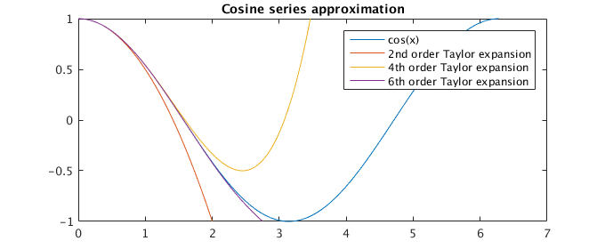
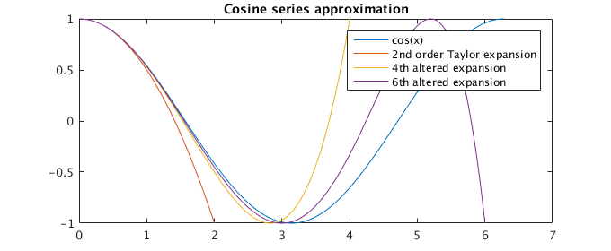
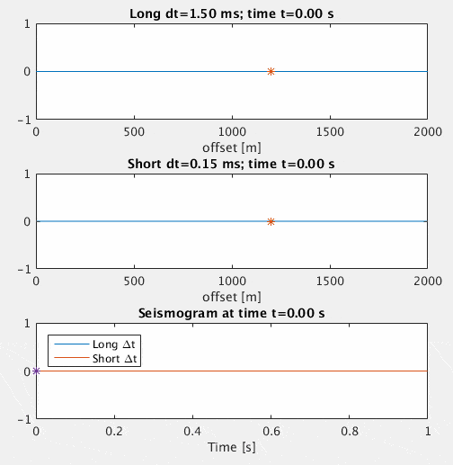
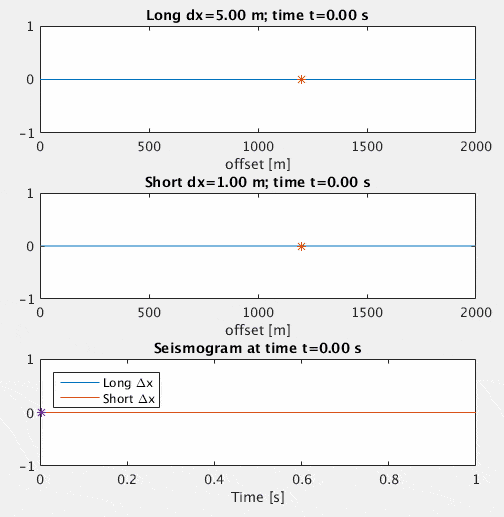
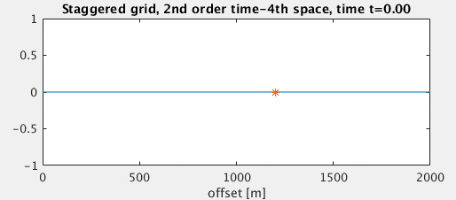
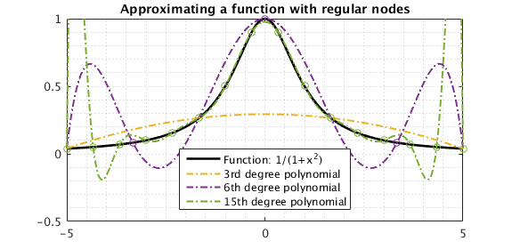
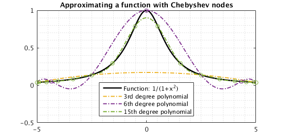
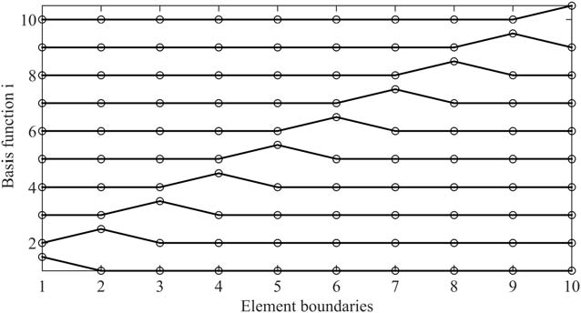

Introduction
Welcome to my homepage. I am Erik Koene, a PhD student on modelling
seismic wave propagation. Through the course of my PhD I will implement
many seismic wave methods and I would like to share these online.
Ordering the information is valuable for me, and may provide help for
anyone else.
We will focus particularly on the modelling of the 1D acoustic wave
equation.
Acoustic wave equation
Formulations
First order system of equations
Deriving the wave equation classically starts with defining two equations relating a wave quantity (e.g. pressure p) to a known medium response (e.g. the change of the particle velocity v⃗ ). This step generally involves simplifications and linearization of processes
which are not necessarily so simple in reality! For the common acoustic
wave equation we are left with two equations, furthermore depending on
density (ρ), acoustic velocity (c), and source terms (q and f⃗ ), depending on the gradient ∇ of location (x⃗ ) and derivative of time (t):
[pv⃗ ]t=[−c2ρ(∇⋅v⃗ +q)−1ρ(∇p−f⃗ )].
This is generally known as the first order system of partial differential equations that make up the wave equation.
Second-order PDE
One can always rewrite a first order system of PDE's into a single
second-order PDE by eliminating one of the quantities, i.e. we may
eliminate the particle velocity v, and assume the compressibility K=c2ρ is independent of time, to find:
∇⋅[1ρ∇p]−1c2ρptt=s(d)+s(m).
This is generally known as the second-order partial differential equation that makes up the wave equation. The source terms have been renamed to a dipole (s(d)) and monopole (s(d)) source -- one source term spreads evenly in all directions, the other is positive in one direction and negative in the other.
Scalar wave equation
For simple examples, one may choose to assume that density ρ is constant, thus the term ∇1ρ=0. One can then write:
∇2p−1c2ptt=S(d)+S(m).
This is generally known as the scalar wave equation. The source functions have been multiplied with density.
Note again that this is a simplified description of wave equation
physics as if a Newtonion viscous fluid. None of these formulations
takes into account frequency-dependent attenuation, elastic effects and
other non-linear, non-Newtonian physics.
Expected Green's function solutions
It is important to know what solutions to the wave equation look like.
One can find solutions to the homogeneous scalar wave equation by
setting the source terms to −δ(t), i.e. a negative impulse function:
(∇2−1c2∂2∂t2)p(x,t)=−δ(t).
Correspondingly, one can find the pressure solution p(x,t) that produces the negative impulse function. As the spatial gradient ∇
is different for different dimensions, so does the pressure solution
change as well. These solutions are known as the Green's function
solutions. One can compute the solution for a different source wavelet
by taking the convolution product between the Green's function solution G and the source wavelet S. The Green's functions for different dimensions, dependent on the Euclidian (Pythagoras) distance between source and receiver r=|x⃗ source−x⃗ receiver|:
⎡⎣⎢G1DG2DG3D⎤⎦⎥=⎡⎣⎢⎢⎢⎢c2H(t−rc)H(t−rc)2π(t2−r2c2)1/214πrδ(t−rc)⎤⎦⎥⎥⎥⎥,
where function H is the step-function, i.e. 0 for a negative argument, 1 for a positive argument, 12 for a zero argument.
The solution for an arbitrary source wavelet S
is found by convolution with the Green's function. The convolution with
the delta function, as in the 3D case, simply returns the wavelet S
but decayed in amplitude as we move away from the source. The
convolution with the step function, as in the 1D case, returns the
integrated wavelet ∫Sdt without any form of decay. The 2D case is the odd one out, achieving something akin to 'half an integration'.
The important realisation is that we do not necessarily expect to observe the injected wavelet S in the domain if we work in 1D or 2D! In 1D, we may choose to inject the derivative of our source ∂S∂t to observe S
propagating within the domain and e.g. record it as such on a synthetic
seismogram! For 2D I have not encountered an effective way to shape the
wavelet before injection, though 45° filters (constant phase shift with e−iπ/4 in the frequency domain) and half-derivative filters
(applying half a derivative in the frequency domain) may provide part
of the answer, but still require a substantial amount of noodling before
an effective shaping is achieved. The best results, I obtained using
deconvolution of the wavelet using the 2D Green's function solution in
the frequency domain, i.e. dividing by the modified bessel function of
the second kind with frequency (K0(iω)).
In industry, people also use matched filters, i.e. model using any
wavelet, record the wavelet somewhere and compare it to its desired
shape (for example, a Ricker wavelet) at that point, and use this to
find an appropriate frequency filter and correspondingly the appropriate
input wavelet. Additionally, take note that 2D and 3D wave propagation
have significant differences between near-field source signature and
far-field signature, the two components dropping off in amplitude at
different distances to the source. This is usually expressed in
requiring to be 1 to 4 wavelengths away from the source.
Download MATLAB: FTDT_2D_shaping.m: Different pre-shaping of the 2D input wavelet
Second-order finite-difference in time
The finite-difference technique replaces derivatives in the wave
equation with finite-difference approximations of limited accuracy. We
will first study the effect of taking a second-order finite-difference
approximation of the temporal derivative, i.e. that in time. We will
demonstrate this step of second-order finite-difference accuracy for
both the second-order and first-order PDE of the wave equation, followed
by a description of higher-order solutions as well.
Second-order scalar wave equation
We reformulate the scalar wave equation with only time derivatives on the left side:
∂2p(x,t)∂t2=c(x)2∇2p(x,t)+S(t),
where S(t) is the source function, implicitly multiplied by density and velocity squared!
We take a second-order finite difference approximation to replace the terms on the left hand side with finite-differences:
∂2p∂t2≈p(t−Δt)−2p(t)+p(t+Δt)Δt2=∑k=1∞Δt2(k−1)12(2k)!∂2kp(t)∂t2k.
The summation on the right-hand-side is the Taylor series expansion of
the finite-difference approximation. It shows us that the terms indeed
compute the second derivative (k=1), but also lead to incorrect (undesired) higher-order derivatives (k≥2), which become more apparent for larger time steps Δt. Disregarding the error, we thus write:
p(t−Δt)−2p(t)+p(t+Δt)Δt2=c2(x)∇2p(x,t)+S(t).
We thus compute updates to the second-order scalar wave equation as:
p(t+Δt)2nd order=2(1+Δt22!c2∇2)p(x,t)−p(t−Δt)+Δt2S(x,t).
This is known as time-stepping, a time marching scheme,
or integrating the derivative. We can explicitly compute the wavefield
for every time step! This method applies to all wave equation modelling
tools (finite-differences, spectral elements, you name it!).
Arbitrary order scalar wave equation
Lax-Wendroff corrections
An alternative way to arrive at the 2nd order time-stepping scheme is
the following. Starting with the Taylor series, we can write our update
step as following:
p(t−Δt)−2p(t)+p(t+Δt)Δt2p(t+Δt)=∑k=1∞Δt2(k−1)12(2k)!∂2kp(t)∂t2k,=2(1+Δt22!∂2∂t2+Δt44!∂4∂t4+…)p(t)−p(t−Δt).
We may replace the terms ∂2p(x,t)∂t2 through the scalar wave equation, leading to:
p(t+Δt)any order=2(1+Δt22!c2∇2+Δt44!c4∇4+…)p(t)−p(t−Δt).
We note that the second-order scheme simply truncates the resulting series at the term Δt2, but higher order accuracy in time is possible if we add the additional spatial derivatives! These are known as Lax-Wendroff corrections, devised in the 1960s, and famously applied to the wave equation by Dablain (1986).
Why would you apply such corrections? To increase the maximum allowable Δt and to decrease the approximation error.
Optimized corrections
Very often, the Taylor series expansion (such as for the Lax-Wendroff
scheme above) is not ideal when we truncate the series for a fixed
number of terms. The Taylor series converges very slowly, and using
optimization methods it is usually possible to find better coefficients
for a given truncation of the series. This means that we improve
stability and accuracy at no cost at all! Consider the following idea.
Write down the 2nd order solution explicitly at the next time step:
p(x,t+2Δt)2nd orderΔt→Δt2 gives p(x,t+Δt)=2(1+Δt22!c2∇2)p(x,t+Δt)−p(x,t)=2(1+Δt22!c2∇2)(2(1+Δt22!c2∇2)p(x,t)−p(x,t−Δt))−p(x,t),=[2(1+Δt22!c2∇2)]2p(x,t)−2p(x,t)−p(x,t−2Δt),=2(1+2Δt2c2∇2+Δt42c4∇4)p(x,t)−p(x,t−2Δt),=2(1+Δt22c2∇2+Δt432c4∇4)p(x,t)−p(x,t−Δt).
This is an example of an optimized series expansion, more stable than the Lax-Wendroff correction up to 4th order.
Stability criterion
So how do we check the stability? I don't fully understand the below, but other papers make the following argument.
Stability region
Observe that the Taylor series for the 'any order' time stepping is a trigonometric function:
2(1+Δt22!∂2∂t2+Δt44!∂4∂t4+…)=2cos(iΔt∂∂t).
substituting ∂∂t with the square-root of the wave equation gives:
p(t+Δt)any order=2cos(iΔtc∇)p(t)−p(t−Δt).
Recursive analysis shows that this scheme is stable only when the cosine approximation is bounded between [−1,1]. Writing out the first few Taylor expansion terms leads to the following:

Download MATLAB: Taylor series cosine approximation
We observe that the Taylor series goes out of bounds at 2 for the 2nd order solution, at 23–√≈3.46 for the 4th order approximation and at 10−225−−√3+25–√3−−−−−−−−−−−−−−√=2.75 for the 6th order scheme. This, interestingly, means that the 4th order Taylor scheme is more stable than the 6th order scheme.
It is possible to come up with altered approximations to the cosine
function, trying to maximize the stable region within a given accuracy,
e.g. as done here, where the stability region increases to 4 for the 4th order scheme and to 6
for the 6th order scheme. Now the 6th order scheme is indeed stable
longer than the 4th order scheme, at the expense of being less accurate
for smaller frequencies.

Download MATLAB: Altered series cosine approximation
Stability criterion
These numbers come into play in setting the (general) stability criterion, generally expressed using the CFL number. For the pseudospectral method, for example, this is:
CFL=cmaxΔtΔx≤ηπD−−√,
where Δx is the spatial grid sampling, cmax the maximum velocity of the given model, and D the spatial dimension (1, 2 or 3) of the simulation, and η is the stability region from the pictures above (2, 4 or 6), depending on the used scheme. In other words, Δt is given as:
Δtpseudospectral≤ηΔxπD−−√cmax.
Now it is visible that a larger η indeed allows the use of larger time steps.
Time dispersion
Naturally, the finite-difference operator is an approximation, and
contains errors: higher order temporal or spatial derivatives which are
not taken into account. As an example, consider the figure below, where
we solve the scalar wave equation accurately using the pseudospectral
method but with second-order time-stepping (below). The upper simulation
shows a large time step Δt, whereas the middle simulation shows a small time step Δt. On the bottom, a synthetic trace from both simulations is compared. We observe that for large Δt,
the Ricker wavelet distorts as time passes. Specifically, we observe
that higher frequencies are moving too fast, moving towards the front of
the wavelet. Using a small Δt, conversely, retains the original shape of the wavelet. We call this numerical distortion of the wavelet (numerical) time dispersion.

Download MATLAB: Time dispersion example
Describing the time dispersion error
Recalling the Taylor series expansion that makes up the second-order
time derivative, we note that we do not compute only the second-order
time derivative, but also higher order derivatives. These higher order
derivatives are the source of the time dispersion. We can describe the
time dispersion by taking the Fourier transform of the Taylor series:
F[∑k=1∞Δt2(k−1)12(2k)!∂2kp(x,t)∂t2k]=−ω2p~(x,ω)(sin(12ωΔt)12ωΔt)2=−ω2p~(x,ω)θ2.
The term −ω2p~(x,ω) corresponds to the second-order time derivative, whereas the term θ2 corresponds to the undesired higher-order terms. This means that we can write for the second-order finite-difference operator:
p(t−Δt)−2p(t)+p(t+Δt)Δt2=F−1[−ω2p~(x,ω)θ2].
Thus, solving the second-order finite-difference in time solves the following equation:
F−1[−ω2p~(x,ω)θ2]=c(x)2∇2p(x,t)+S(t).
If we bring the term θ to the other side of the equation, we gain the following equation:
∂2p(x,t)∂t2=F−1[c2(x)θ2F[∇2p(x,t)+S(t)]].
This derived equation is the equation that we solve by replacing the
second-order derivative with a second-order finite-difference. It is
almost the desired scalar wave equation, except for the term θ. The complete term cθ
describes a frequency-varying wave-speed, which perfectly describes the
effect observed in the image above: higher frequencies are sped-up up
to 1.6 times their nominal speed!
Removing time dispersion
To counteract time dispersion, one can either make Δt
smaller, use a higher order approximation (see further), or remove its
effect after the simulation is complete. The latter technique has been
noted by Stork (2013)
first, and I further developed the theory to derive two simple
analytical functions that add/remove the temporal dispersion at the end
of a simulation.
First order system of equations: leap-frog
Sometimes it is preferred to solve the first order system of equations
that make up the wave equation, rather than the second order PDE. We may
write this system as:
[pv⃗ ]t=[−c2ρ∇⋅v⃗ +s(m)−1ρ∇p+s⃗ (d)].
We may replace the time derivatives with first-order finite-differences:
⎡⎣p(x,t+Δt)−p(x,t)Δtv⃗ (x,t+Δt)−v⃗ (x,t)Δt⎤⎦=[−c2ρ∇⋅v⃗ +s(m)−1ρ∇p+s⃗ (d)].
And we may derive a time-marching scheme, where we update pressure p and particle velocity v⃗
in tandem. However, note that once we compute the first term, the
update for the pressure, we might as well use this information in our
update for the particle velocity v⃗ , achieving somewhat of a speed-up:
⎡⎣⎢p(x,t+Δt)−p(x,t)Δtv⃗ (x,t+32Δt)−v⃗ (x,t+12Δt)Δt⎤⎦⎥=[−c2ρ∇⋅v⃗ +s(m)−1ρ∇p+s⃗ (d)].
If we start with knowledge of v⃗ at time t+12Δt, we can compute p at t+Δt, and use that to compute v⃗ at time t+112Δt! As we do the computations in serial (one after the other), this provides a minor but easy speed-up. The technique is called leap-frog, because we skip the computation at half Δt that we use for our updates!
The leap-frog system, the typical solution to the first order system of equations, is thus:
p(x,t+Δt)v⃗ (x,t+32Δt)=Δt(−c2ρ∇v⃗ (x,t+12Δt)+s(m))−p(x,t),=Δt(−1ρ∇p(x,t+Δt)+s(d))−v⃗ (x,t+12Δt).
The process then iterates for values at 1 Δt further in time.
The leap-frog method has favourable qualities, such as being fast,
requiring only a little bit more data storage, and conserving the wave
energy (unlike the second-order solution which is dissipative, i.e.,
loses energy over time). Time dispersion may be treated exactly like
described above.
Finite-difference in space
So far, we've focused on the finite-difference approximation of the
temporal quantity. The remarks are equal for essentially all
wave-equation methods like finite-difference, finite-volume,
finite-elements, spectral-elements, pseudo-spectral, ... . We will now
focus our attention on specific choices to compute the spatial operator.
Like the temporal operator, we will see that we can work with different
orders of approximations.
1D Scalar wave eq. finite difference: 2nd order in space
2nd order in time, 2nd order in space
As a first introductory method, replace all derivatives in the scalar wave equation with 2nd order finite-differences to find:
p(t−Δt,x)−2p(t,x)+p(t+Δt,x)Δt2=c2pp(t,x−Δx)−2p(t,x)+p(t,x+Δx)Δx2+s(x,t).
As said earlier, the solution to the 1D wave equation is an integration of the source wavelet s(t). To observe a Ricker wavelet in our domain, define
Ricker wavelet≡(1−2τ2)e−τ2, with τ=πf(t−t0),
and then inject its derivative as the source function:
s(t)=2πfτ(3τ2−6)e−τ2.
Furthermore, remember that the source function is implicitly multiplied with c2, as found in the first paragraph of the FD in time. But we note in the 1D Green's function solution there is already a factor c2, so to correct for this we multiply the source with 2c. Lastly, because we do a volume injection we must divide by the size of the volume Δx. If we wouldn't use this factor, the source would vary for different choices of cp, Δt and Δx. We can now rewrite the system above and single out the update step p(x,t+Δt).
Using subscripts for the location and superscripts for the time, we
write the 2nd order in time and space FD function, with proper scaling
of the source, as:
pt+Δtx=c2pΔt2Δx2(ptx−Δx−2ptx+ptx+Δx)+2ptx−pt−Δtx+2cpΔt2Δxst+Δtx.
So let's run this simulation for two different values of Δx, while keeping Δt small:

Download MATLAB: Space dispersion example
We observe a similar phenomenon to the temporal dispersion for large Δx, but now the wavelet disperses with the higher frequencies lagging behind! What we observe here is really the sum of temporal and spatial dispersion, and apparently spatial dispersion causes higer frequencies to travel slower than nominal! The two dispersion effects cancel at exactly CFL=cΔtΔx=1.
It is easy to generate a CFL number of 1 in a homogeneous model, but in
a heterogeneous model this is impossible, thus we would always have
some amount of spatial and temporal dispersion in our domain.
We clearly need a way to get a better grip on the spatial dispersion. One option would be to decrease Δx, but due to the CFL stability condition (cpΔtΔx≤1 for this 2nd spatial order FD 1D scalar wave equation), this forces us to decrease Δt
as well, increasing the number of calculations quadratically. In 2D
(cubic) and 3D (biquadratic) this effect is even larger, and generally
undesired. Luckily, there are a number of tactics to employ.
4th order in time, 2nd order in space
We can apply the first Lax-Wendroff correction, by using additional differencing in space, as suggested by Dablain (1986). The advantage of this method is that we can now use ΔtLW=76ΔtCFL, thus a larger Δt
is permitted! Of course, being more accurate in time highlights the
inaccuracy in space, so the spatial dispersion will be extra obvious.
The easiest way to implement this is by applying the 2nd order finite
difference operator twice on the spatial data, using an intermediate
variable:
du2txut+Δtx=(utx−Δx−2utx+utx+Δx),=c2pΔt2Δx2du2tx+c4pΔt412Δx4(du2tx−Δx−2du2tx+du2tx+Δx)+2utx−ut−Δtx+2cpΔt2Δxst+Δtx.
Download MATLAB: Wave-eq-42.m: Lax-Wendroff correction
Optimized 4th order in time, 2nd order in space
We can use the optimized 4th order scheme in time as derived above, using a factor 116 rather than 112 for the fourth order term. We can then use ΔtLW=1.59ΔtCFL, much better still! The system looks only mildly different:
du2txut+Δtx=(utx−Δx−2utx+utx+Δx),=c2pΔt2Δx2du2tx+c4pΔt416Δx4(du2tx−Δx−2du2tx+du2tx+Δx)+2utx−ut−Δtx+2cpΔt2Δxst+Δtx.
Download MATLAB: Wave-eq-4a2.m: Optimized 4th order correction
Alternative 6th order in time, 2nd order in space
We can similarly use the alternate 6th order in time as described in the literature above. We can then use ΔtLW=1.62ΔtCFL, which is not a significant improvement, not quite worth the effort anymore considering the additional required computations.
Download MATLAB: Wave-eq-6a2.m: Optimized 6th order correction
1D Scalar wave eq. finite-difference: higher orders in space
2nd order in time, 4th order in space
Just like the temporal operator, we realize that a good
finite-difference approximation of the second derivative involves more
terms. Using, for example, Taylor expansion, one can derive a more
accurate approximation of the second spatial derivative:
ut−Δtx−2utx+ut+ΔtxΔt2=c2p−112utx−2Δx+43utx−Δx−52utx+43utx+Δx−112utx+2ΔxΔx2.
The error is now scaling with O(Δx4). So for small enough Δx, our spatial dispersion error should be much smaller too.

Download MATLAB: Wave-eq-24.m: 4th order spatial operator reduces spatial dispersion
Indeed, compared to the picture before, we have much less spatial
dispersion, and even in the middle frame we observe that temporal
dispersion is the stronger force!
2nd order in time, optimized 4th order in space
Like the temporal operator, it is possible to outdo the Taylor series terms and find optimized FD coefficients, e.g. Liu (2013).
Merely changing the employed numbers allows us to minimize spatial
dispersion even more. Such optimized methods essentially 'flatten' the
dispersion: at the expense of introducing small dispersion also for low
wavenumbers (spatial frequencies), we achieve stability for a larger
wavenumber range. Choosing just how much dispersion is acceptable, at
which wavenumber range, depends on the problem and expected wavenumbers!
I include a small Least-squares FD coefficient searcher in the bottom
of the page.
Download MATLAB: Wave-eq-24a.m: Optimized 4th order spatial operator, reducing even more spatial dispersion
Staggered finite difference grid
A very different direction would be to use a staggered grid approach.
This method implements the system of two 1st order differential
equations underlying the derivation of the wave equation:
∂p∂t∂vx∂t=−c2ρ∂vx∂x−f,=−1ρ∂p∂x−g.
Note that the two equations depend on each other, so solving both
equations at the same time step would be using out-of-date information
on either component P and vx.
The solution: using a staggered grid and leap-frog method in time. This
means that we will compute one of the two components at full time step
and space, and the other component shifted by Δt2 and Δx2.
Staggered grid: 2nd order in time, 4th order in space
We can thus achieve a much higher accuracy (using already updated values
of the other component), accurately deal with density changes, have
access to the velocity components (interesting for seismic processing)
and inject dipole sources as well. For the 4th order FD scheme, for
example, we get the following scheme:
pt+Δtx−ptxΔtvt+32Δtx+12Δx−vt+12Δtx+12ΔxΔt=−c2ρ−124vt+12Δtx−32Δx+98vt+12Δtx−12Δx−98vt+12Δtx+12Δx+124vt+12Δtx+32ΔxΔx−f=−1ρ−124pt+Δtx−32Δx+98pt+Δtx−12Δx−98pt+Δtx+12Δx+124pt+12Δtx+32ΔxΔx−g
So, if we 'bootstrap' this scheme by initial conditions Ptx and vt+12Δtx+12Δx, we can find pt+Δtx, and correspondingly find another step of the velocity vt+32Δtx+12Δx, etcetera!
You may wonder about the accuracy of the scheme. It is Δx2 accurate in space (!), but remains Δt
accurate in time. Memory-wise it is extremely efficient, as we can
apply our updates in the same array, thus only ever need a single array
for p and v,
take note of this in the MATLAB array. It is thus more memory
efficient, and due to its accuracy does not increase the computational
burden for similar accuracy. After all these positive points, it will
probably not surprise you that this is the most used modelling method in
industry!

We use the same 'long' Δx as the figure above, but significantly reduce spatial dispersion!
MATLAB: staggered 2nd order in time, 4th in space, wave equation
Note that in this case we essentially have an integral of the scalar
wave equation, thus also we must use the integral of the scalar wave
input wavelet. In the 1D case, that means we can inject the Ricker
wavelet itself! The monopole and dipole source terms thus become:
f=s(m)(t)g=s(d)(t)=2r1(t)ΔtcΔx,=2r2(t)ΔtρΔx
Be aware how the f and g are computed at half a Δt different. Being aware that the dipole wavelet is delayed by ±Δxc+Δt2,
so we must get our Ricker wavelet at this position as well!
See the code to inspect how this works. The monopole and dipole sources
together can create many different types of source signatures! In the
example file we use a monopole and dipole source to create a wavelet
moving in one direction only!
Spectral methods in space
Up to now, we've been approximating the differential equation using finite differences. But what if we approximate the solution instead? In other words, what if we approximate our pressure data with a function, and then know
the algebraic derivative of that function. This is the pseudo-spectral
approach. For periodic functions (rarely encountered) we can solve this
in the Fourier domain (derivative is a multiplication with the
wavenumber). For unperiodic functions (more likely) we can solve this
using Chebyshev polynomials.
These methods are global, as we use all grid points
simultaneously to (1) approximate the solution, (2) find its algebraic
derivative. They thus do not scale well to parallel computer
architecture. But, they are extremely accurate, much more accurate than a
6th, 8th, 10th, ... order finite difference, as used in the industry.
The accuracy grows exponentially with decreasing n,
rather than a power (6, 8, 10, ...), which is extremely good. The
upside, thus, is that we can use much larger spacing with no degradation
in accuracy!
Pseudo-spectral (regular grid, using FFT's)
If we have a periodic boundary and regularly spaced grid, we know that a
derivative in the frequency domain is a multiplication with the squared
wavenumber, F(∂∂x)→ik, thus also F(∂2∂x2)→−k2.
Thus if we Fourier transform the data, apply the squared wavenumber,
inverse Fourier transform, we have all spatial derivatives up to
spectral accuracy!
Pseudo-spectral: 2nd order in time, spectral in space
We thus compute the following:
ut−Δtx−2utx+ut+ΔtxΔt2=c2pF−1(−k2F(ut))+cΔtΔxst+Δtx.
We may single out the update step to find the pseudospectral scheme:
ut+Δtx=Δt2c2pF−1(−k2F(utx))+2utx−ut−Δtx+cΔt2Δxst+Δtx.
MATLAB: 2nd order in time, spectral in space, wave equation
The result is spatially exact, and the only remaining artefact is time
dispersion. The existence of the FFT/IFFT algorithm makes the method
reasonably fast, but as it is global it cannot be run in parallel, thus
in practice it cannot beat the speed of a FD computation on a
supercomputer! Additionally, achieving non-periodic boundary conditions
adds to the computational load.
Pseudo-spectral (Chebyshev nodes)
We observed above how trivial differentiation is once we describe our
data algebraicly. But the Fourier description is limited to periodic
functions only. What if we describe our data using a polynomial function
(f(t)=a0+a1t+a2t2+…), then it is trivial to find the algebraic derivative (f′(t)=a1+2a2t+…)! This idea is similarly fast, but not limited to periodic boundaries!
Polynomial approximation
We need a polynomial fit that's not just correct on the points
themselves, but also the data inbetween. On a regular grid, this is
difficult:

MATLAB: Interpolation using regularly points
You hit every point you're supposed to hit, but do awful in between, particularly at the edges! So, what about a solution: adding more points towards the edge -- when it wants to wiggle, you won't let it! These are called Chebyshev nodes or Gauss-Lobatto collocation points, defined from [−1,1] as:
xj=cos(jπN),
which clusters points along the edges. Using shifting and scaling this
can be made to achieve any grid. Now look how much better this works!

MATLAB: Interpolation using irregularly spaced (cosine) points
So we could safely take the algebraic f′(x)
of this function! And these Chebychev nodes (aka an irregular grid)
nearly always produce the optimal polynomial approximation, very
cheaply! We can find the polynomial algorithmically using the Lagrange
form interpolation:
Say we have three data points (x,f(x))=((1,2,3),(2,5,10)). We could write down the polynomial as such:
f(x)=2⋅x−21−2x−31−3+5x−12−1x−32−3+10x−13−1x−23−2.
Observe that whenever x=(1,2,3), all terms equal 0 except for 1 equalling 1! Now by algebra you may find that this equals:
f(x)=2⋅x−21−2x−31−3+5x−12−1x−32−3+10x−13−1x−23−2=x2+1.
But the algebra is expensive, and faster algorithms exist to do the Chebyshev polynomial approximation.
Pseudo-spectral: 2nd order in time, spectral in space (Chebyshev nodes)
Once we have the Chebyshev polynomial description, getting the second
time derivative is trivial. Many algorithms exist that automate the (1)
polynomial approximation, (2) the derivative. We can easily find a
matrix D which, applied to the function p(x) at the Chebyshev nodes x, returns the second time derivative immediately!
This leads to the following scheme:
ut+Δtx=Δt2c2pD2utx−2utx−ut−Δtx+c2Δt2Δxst+Δtx,
and we have to generate the irregular Chebyshev node grid. The Chebyshev points are between (−1,1), so to generate our grid take the Chebyshev points +1, and then multiply by half the endpoint b2. Then we'll have to divide the Chebyshev update by the number b222, as we apply the operator D twice. Easy!
MATLAB: 2nd order in time, spectral in space (Chebyshev nodes), wave equation
Required code, fastdiff.m to do the Chebyshev differentiation
The differentiation is extremely easy (essentially a blind process) and
spectrally accurate! But we run into an annoying problem: the grid
spacing along the x-axis is extremely fine along the boundaries, thus to ensure a stable CFL condition we need a very small Δt!
So what we gained in accuracy is, frustratingly, gone completely! The
grid distance near the boundary is responsible for the global simulation
time step.
Pseudo-spectral: 2nd order in time, spectral in space (Kosloff-Tal-Ezer transform)
How about this: we sample our function at roughly equal spacing, but act
as if the samples come from Chebyshev nodes. Then we can still use the
rapid Chebyshev differentiation, and simply scale the results as a
function of the stretching! Then we can use a regular grid (with large
spacing), Chebyshev differentiation, while requiring hardly any extra
computational cost!
We originally compute ∇2p(x,t)=∂2p(x,t)∂x2 in 1D, but we will stretch the x coordinates with a function, i.e. x(η):
∂2p(x(η))∂x(η)2=∂2p(x(η))∂η2∂η2∂x(η)2=D2p1(x(η)′)2
Kosloff-Tal-Ezer and Carcione and Wang came up with a proper function x(η) that regularizes a grid to domain (0,xmax), with the Chebyshev points η=cos(jπN) (bounded in (−1,1):
x(η)1x′=xmax2[1−sin−1(γη)sin−1(γ)],=2sin−1(γ)γxmax1−(γη)2−−−−−−−−√
We can then write down the scheme for the Chebyshev stretched coordinate system:
ut+Δtx=Δt2c2pD(Dutxx′)x′−2utx−ut−Δtx+c2Δt2Δxst+Δtx,
MATLAB: 2nd order in time, spectral in space (stretched nodes), wave equation
Required code, fastdiff.m to do the Chebyshev differentiation
This wave equation is more stable than the Pseudospectral scheme (still
stable at CFL=1), and can use, just like the Pseudospectral scheme, very
large Δx<πfmaxcp=kmax.
It is thus accurate in space, can be made accurate in time (using
higher order stepping in time, or the time dispersion corrections I
derived).
Despite the above possibilities, the pseudospectral methods never made it big, as they appear to be impossible to parallellize.
Finite and Spectral elements
The perspective
The finite element method (and its specialized version, the spectral
element method) is closely related to the pseudo-spectral method. Again
we use the knowledge that differentiating and integrating an elementary
function (like a polynomial) is trivial! However, this time we will turn
our domain into many nodes ('elements') and solve for their physics
locally! This is a bit of a short introduction, but it works!
A quick and easy introduction to the Finite-Element method goes as follows:
1. Define the differential equation:
1c2∂2p(x,t)∂t2−∂p(x,t)∂x2−f(x,t)=0.
2. Derive the weak formulation: take the L2 inner product with basis functions ϕi:
∫D1c2∂2p(x,t)∂t2ϕi(x)dx−∫D∂2p(x,t)∂x2ϕi(x)dx−∫Df(x,t)ϕi(x)dx=0.
3. Use integration by parts to rewrite the term with spatial derivatives (using ∫D∂∂x[∂p(x,t)∂x]ϕi(x)=[∂p(x,t)∂xϕi(x)]ba−∫D∂p(x,t)∂xdϕi(x)dxdx. If we assume that the domain is bounded by a free surface on both sides, ∂p(x,t)∂x=0,
the constant term drops out. This is a very cheap free surface, a
problem that still hasn't sufficiently been solved in FD modelling!
∫D1c2∂2p(x,t)∂t2dx+∫D∂p(x,t)∂xϕ′i(x)dx=∫Df(x,t)ϕi.
4. Use the Galerkin approach: write our solution in terms of the same basis functions, p(x,t)≈∑jpj(t)ϕj(x). Note that this is no different from describing our system in terms of Fourier terms (ϕj(x)=eijΔx) or polynomials (ϕj=xj) as the pseudospectral methods! And note how we decoupled the space- and time dependencies! The coefficients pj(t) now describe the pressure in terms of the basis! This is not fundamentally different from the pseudospectral method!
∑jd2pj(t)dt2∫Dϕjϕic2dx+∑jpj(t)∫Dϕ′j(x)ϕ′i(x)dx−∫Dfϕidx=0.
5. Rewrite the solution to a matrix-vector form, where the matrices simply come from the integral of 1c2ϕiϕj and the integral of ϕ′iϕ′j:
p′′j(t)Mji+pj(t)Kji=fi.
6. Transpose this equation and rearrange:
Mijp′′j(t)=fi−Kijpj.
7. Premultiply both sides with M−1ij (the inverse) and approximate the second time derivative with Finite Differences:
pj(t−Δt)−2pj(t)+pj(t+Δt)Δt2=M−1ij[fi−Kijpj].
8. Thus the finite element solution is the following:
pj(t+Δt)=Δt2M−1ij[fi−Kijpj]+2pj(t)−pj(t−Δt).
The spectral element solution chooses ϕi and ϕj such, that the mass matrix Mij=δij1c2,
i.e. is diagonal, thus absolutely trivial to invert (one of the most
expensive parts if you stick with finite elements). The spectral element
scheme thus takes form:
pj(t+Δt)=Δt2c2[fi−Kijpj]+2pj(t)−pj(t−Δt).
Note how close of a formulation this is to the finite difference method! If the stiffness matrix K looks like 1Δx2⎛⎝⎜⎜⎜−21001−21001−21001−2⎞⎠⎟⎟⎟ it would be identical to the finite-difference scheme, where we would define pj=p(x+jΔx) (easy to check)!
Basis choice
Continuing the finite-difference parallel, note how in step 4 we wrote our solution as p(x,t)=∑jpj(t)ϕj(x), and note how in finite-differences we found p(x,t)=pj(t). This basis set would do just that:

Image from Computational Seismology: A Practical Introduction (2016) by Heiner Igel
On the element nodes (i&j) this would give:
ϕj(x)=ϕi(x)={10if j=x0+jΔxotherwise?
and would satisfy the above discussion. One can write down what the mass matrix M and stiffness matrix K
would look like (but I won't :D). Basically, with finite
elements/spectral elements, it's wisest not to write your own software
but use existing ones! For MATLAB, for example, consider this one: SEMLAB.
Element choice and stiffness matrix
Boundary conditions
Acoustic imaging
Reverse time migration
List of codes
MATLAB: 2nd order in time, 2nd order in space, scalar wave equation
Increasing temporal resolution
MATLAB: 4th order in time, 2nd order in space, scalar wave equation
MATLAB: optimized 4th order in time, 2nd order in space, scalar wave equation
MATLAB: optimized 6th order in time, 2nd order in space, scalar wave equation
MATLAB: FTDT, filter to add temporal dispersion
MATLAB: ITDT, filter to remove temporal dispersion
Increasing spatial resolution
MATLAB: 2nd order in time, 4th order in space, scalar wave equation
MATLAB: 2nd order in time, 4th order in space, staggered wave equation
MATLAB: 2nd order in time, optimized 4th order in space, scalar wave equation
MATLAB: 2nd order in time, pseudospectral, scalar wave equation
Mixed
MATLAB: optimized 4th order in time, 4th order in space, scalar wave equation
(note how spatial dispersion is still the dominant force, as we use
high order spatial differences to correct for the temporal differences.)
MATLAB: optimized 4th order in time, pseudospectral in space, scalar wave equation
(now temporal dispersion is the dominant force, and we can use exactly
twice the time stepping of the standard pseudospectral solution.)
Miscellaneous
MATLAB: 2D staggered wave equation (2nd in time, 4th in space), source shaping
MATLAB: Taylor series coefficients for cosine
MATLAB: Optimized series coefficients for cosine
MATLAB: Least-squares optimized spatial FD derivative coefficients following Liu
MATLAB: Holberg (1987) optimized spatial FD derivative coefficients
MATLAB: Holberg (1987)-esque optimized spatial FD interpolation coefficients
MATLAB: Automated, any order staggered grid using above LS coefficients, dx is function of spatial order.
MATLAB: Least squares tau p transform
MATLAB: Example file for least squares tau p transform